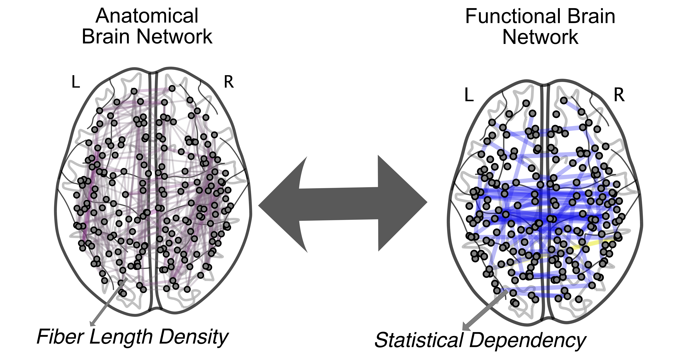
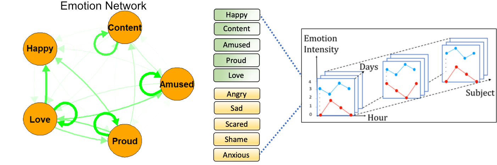

Overview
Nervous systems are complex networks comprised of spatially distributed regions. These regions are linked to one another by structural and functional connections that represent interregional white-matter fiber pathways and pairwise statistical relationships between regional activity, respectively. We use computational tools from network science, dynamical systems theory and, machine learning to study the organization of these structural and functional connection in human brain networks (obtained from diffusion weighted imaging, fMRI, or EEG) with the goal of understanding the underlying mechanisms for cognition, development, and disease. Some of our current research projects are:
Structure-function relationships in brain networks
It is widely understood that functional connectivity (FC) reflects the outcome of an ongoing dynamical process and is constrained by the underlying structural connectivity (SC). However, the precise mapping of SC to FC is complex and poorly understood, especially at the level of individual brain regions. To address these challenges, we use a set of network measures that quantifies the interregional and whole-brain communication policies in the structural brain networks and examine their predictive capacities of FC. Specifically, we are interested to understand how does the physical layout of the brain shape the temporal changes of its function? How does this relationship vary across the cerebral cortex? How does structure-function relationship are affected by neurological and developmental disorders such as Alzheimer, dementia, and autism spectrum disorder?

Dynamics of Functional Brain Networks
The functional coupling between brain regions changes over time, supporting ongoing complex behaviors and cognitive processes. However, the underlying neural mechanisms that enable efficient reconfiguration of these functional connectivity patterns remain unclear. We address this challenge using newly proposed “edge-centric” approach, which allows capturing the changes in the co-fluctuation patterns between brain regions at a framewise time scale. We are specifically interested to look into questions such as how fast does the brain switch between different dynamical regimes? How could we detect and model these switches? And does this switching behavior depend on the state of patients with mental disorders?

Getting Beyond Brain Networks
Studying brain networks provides invaluable insights into the underlying mechanisms of the human brain . On a higher level, we can also study interrelationship of the behavioral and cognitive outputs and their impact in shaping the overall mental states of individuals. We are particularly interested to use the notion of network science in combination with dynamic systems theory to represent these variables as networks and characterize their temporal changes. Some of the specific questions we explore include: How does the intrinsic and extrinsic events influence the brain networks? Does this influence depend on the severity and length of an event? And how can we control and suppress these influences?
